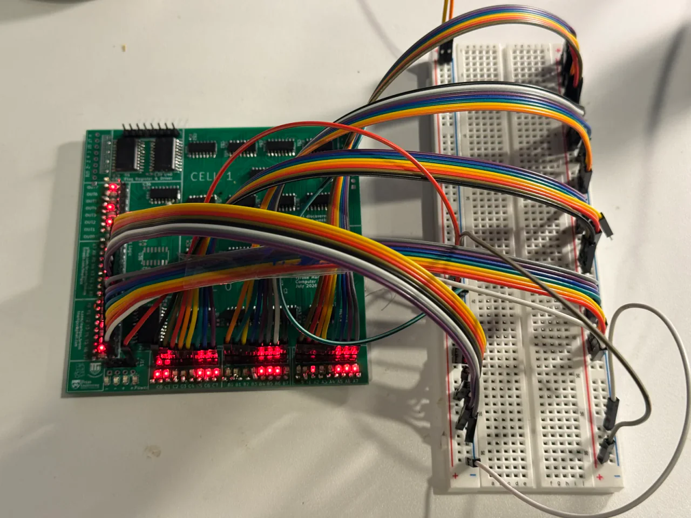

Dispatch · Bring-up
The invisible logic
Designing without an on-board FSM means only I know how this slice runs off the top of my head. Something external has to drive it.
The catch with designing this board without a finite state machine is that perhaps only I know how it works off the top of my head — and understand it this intimately.
The job of an FSM was to demonstrate the board crunching numbers: an opcode sweep (see the hardware compiler), Fibonacci, Collatz, among infinite other options.
Drive from outside
One solution: generate the bit signals for the operands on an external board. Arduino, ATmega328PB, Nexys Artix‑A7, or ESP32.
The requirements are strict. At least 8 × 3 (24 parallel signals) for operands A, B, and C, plus 8 × 2 (16 parallel signals) for opcodes X and Y. Those are just the core pins; flag write enable, zero in, and carry-in select may be tied to ground for now.
Carry was designed so toggling the least significant bit sets it as 0 or 1 when bit[1] and bit[2] are grounded — with the intended ripple connection in mind.
Voltage and pins
The ESP32 problem is 3.3 V logic. It may talk to 5 V systems, but the drop can introduce garbage and make debugging twice as hard.
The other boards — especially a basic Arduino — run into pin count. From a bare count I need at least forty pins. That sounds like a lot. It feels justified given the 524,288 ALU operations this discrete board can perform.
I have resolved to try the ATmega328PB: a few on hand, two driven together, flashed and powered in sync by hand. The board will run at about 1 Hz or less — every step of the calculation visible and deliberate.
Earlier bring-up anxiety: do not build a throwaway FSM that becomes Tomato anyway. The lights are already on (first lights). Display path next: the PMOD pivot.
From the build
The work behind the words.
{kind=link}

Lot 07 on the bench during board testing.
The search loop tries ALU controls and holds a matching result.